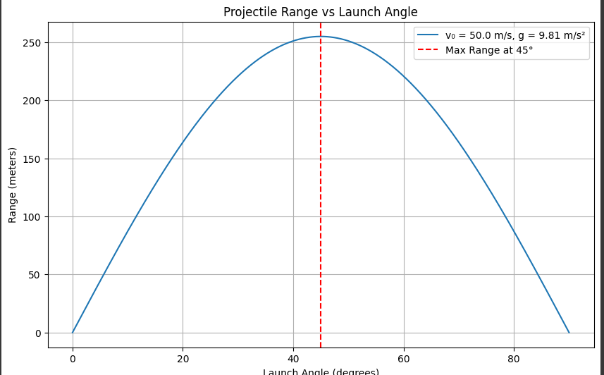
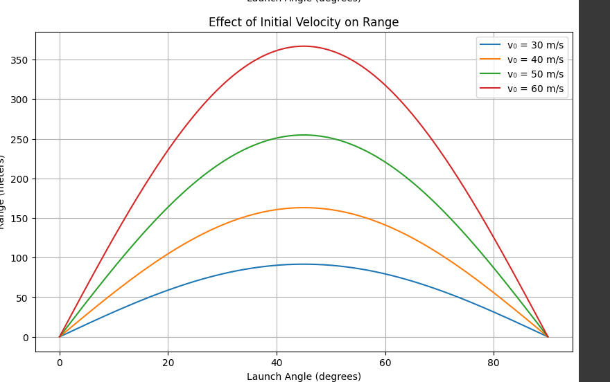
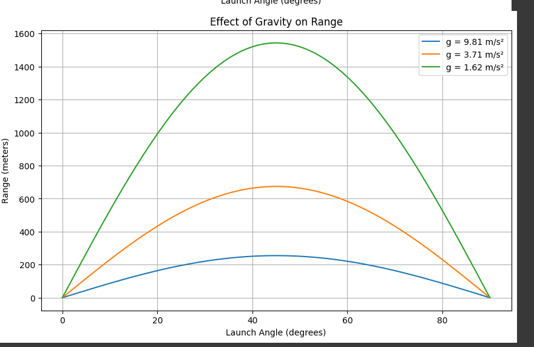

Projeksiyon açısının bir fonksiyonu olarak aralığın araştırılması
1. Teorik Temeller
Yönetim Denklemlerinin Türetilmesi
Bir merminin hareketi, Newton'un ikinci yasası uygulanarak tanımlanabilir. Yataya göre \(\theta\) açısında \(v_0\) hızla bir başlangıç konumundan fırlatılan bir mermi için elimizde:
Yatay yönde (x ekseni): \(\(\frac{d^2x}{dt^2} = 0\)\)
Dikey yönde (y ekseni): \(\(\frac{d^2y}{dt^2} = -g\)\)
Burada \(g\) yerçekimi ivmesidir (Dünya'da yaklaşık 9.81 m/s²).
Bu denklemleri zamana göre başlangıç koşullarıyla bütünleştirirsek: - \(x(0) = 0\) - \(y(0) = H\) (başlangıç yüksekliği) - \(v_x(0) = v_0\cos(\theta)\) - \(v_y(0) = v_0\sin(\theta)\)
Elde ettiklerimiz:
Bu parametrik denklemler, merminin herhangi bir zamanda $t konumunu tanımlar.
Çözüm Ailesi
Çözüm ailesi, parametrelerin değiştirilmesiyle tanımlanır: - İlk hız (\(v_0\)) - Fırlatma açısı (\(\theta\)) - Başlangıç yüksekliği (\(h \() - Yerçekimi ivmesi (\)g\))
Bu parametrelerin her kombinasyonu benzersiz bir yörünge oluşturur.
2. Aralık Analizi
Aralık Denklemi
\(R\) aralığı, mermi ilk yüksekliğine döndüğünde kat edilen yatay mesafedir. Bunu bulmak için, \(y(t) = h\) olduğunu belirlememiz gerekir:
Basit -leştirme: \(\((v_0\sin\theta)t - \frac{1}{2}gt^2 = 0\)\)
Bu denklemin iki çözümü vardır: \(t = 0\) ve \(t = \frac{2v_0\sin\theta}{g}\)
İkinci çözüm bize uçuş süresini verir. Aralık o zaman:
Bu, aralığın aşağıdakilerle orantılı olduğunu gösterir: - İlk hızın karesi - Projeksiyon açısının iki katı sinüs - Yerçekimi ivmesi ile ters orantılı
Maksimum Menzil için Optimum Açı
Aralığı en üst düzeye çıkaran açıyı bulmak için, \(\theta\)'ye göre farklılaştırırız ve sıfıra eşit olarak ayarlarız:
Bu bize \(\cos(2\theta) = 0\) verir, dolayısıyla \(2\theta = \frac{\pi}{2}\) veya \(\theta = \frac{\pi}{4} = 45°\)
Bu nedenle, hava direncinin yokluğunda ve düz bir iniş yüzeyi ile, maksimum menzil 45°'lik bir açıyla elde edilir.
Başlangıç Yüksekliğinin Etkisi
Mermi, iniş yüzeyinin $h $ üzerindeki bir yükseklikten fırlatılırsa, menzil denklemi daha karmaşık hale gelir:
Burada \(t_{iniş}\), merminin yer seviyesine ulaştığı zamandır (\(y = 0\)):
Bu ikinci dereceden denklemi çözmek:
Bu, aralığın artık başlangıç yüksekliğine de bağlı olduğu anlamına gelir:
3. Pratik Uygulamalar
Gerçek Dünyada Dikkat Edilmesi Gerekenler
Uygulamada, mermi hareketi şunlardan etkilenir: - Hava direnci (sürükleme) -Rüzgar - Değişen yerçekimi alanı - Dönen referans çerçeveleri (Coriolis etkisi) - Düzgün olmayan arazi
Hava Direncinin Dahil Edilmesi
Hava direnci için basit bir model, hız ile orantılı bir sürükleme kuvveti içermektir:
Bu, değiştirilmiş bir diferansiyel denklem kümesine yol açar:
Burada \(b\) sürükleme katsayısı ve \(m\) merminin kütlesidir.
Bu denklemler tipik olarak çözmek için sayısal yöntemler gerektirir.
4. pyhton uygulaması
!   